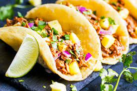
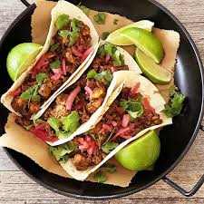

Tacos Al Pastor



What is al pastor
Al pastor is a Mexican dish with pork that`s been slow roasted on a vertical spit. Vertical spits are often associated with
middle eastern food and this is no exception.
Legend says that Lebanese immigrants brought the cooking method to Mexico, where they paired it with traditional adobada
to make the genius style known as al pastor.
It`s served in all kinds of dishes, from tortas/sandwiches, to pizzas, and even on rice, but the most celebrated way to
serve it is in tacos al pastor. The crisp smoky
pork is sliced-to-order with a razor sharp knife as it`s flame crisped by the vertical spit. The meat falls right
into each taco and topped with a flourish of slow-roasted pineapple. It`s heaven in a tiny tortilla.
RECIPE
- 8 dried guajillo peppers
- 2 lb pork shoulder/butt
- 8 cloves of garlic
- 7 oz chipotle peppers in adobo
- 1 tbsp sugar
- 2 tbsp achiote paste
- 13.5 oz pineapple chunks
- corn or flour tortillas
-
Soak the guajillos in a small bowl filled with hot tap water for 15 mins. You can either remove the stems and seeds beforehand,
or wait til the peppers are soft and pliable, hold them by the tip, upside down, over the sink, and cut the stems off. The seeds should fall right out.
-
Meanwhile, season the pork generously with salt.
-
Add guajillos, garlic, chipotle in adobo, sugar, achiote paste, and 1/2 cup pineapple juice to a blender and blend into a smooth marinade.
-
Marinate the pork for at least 30 mins and up to 24 hours in the fridge.
-
Preheat your oven to 500°F. Arrange the pork in a single layer on another baking sheet. Broil the pork until the edges and corners start to char, about 20 minutes.
-
While you wait for your pork to finish, arrange drained pineapple chunks in a single layer on a foil lined baking sheet. Remove the pork and broil pineapples until charred, another
-
Slice meats, fry up, and make tacos.